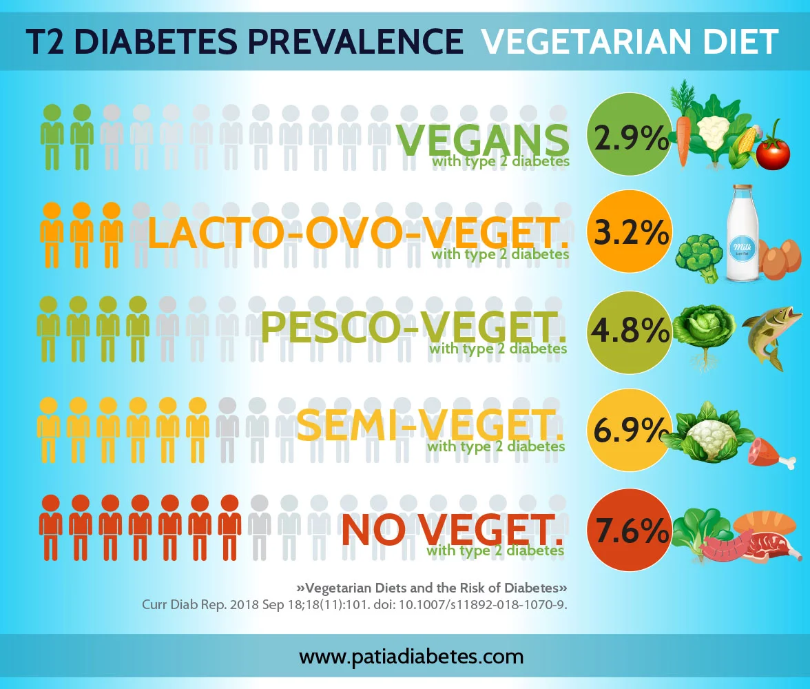

Factors de mortalitat lligats a l'alimentaci√≥ ü•ó
Segons un estudi basant-se en les estadístiques globals de mortalitat de 195 països entre 1990 i 2017 els cinc factors alimentaris que més disminueixen l'esperança de vida tant a Europa com globalment són:
- Dieta baixa en cereals integrals
- Dieta alta en sodi
- Dieta baixa en fruites
- Dieta baixa en fruits secs
- Dieta baixa en verdures
Segons un estudi dut a terme amb 6381 persones, la prevalença de càncer és fins a quatre vegades superior en persones amb dietes altes en proteïna animal (més del 20% de les calories diàries) respecte a persones amb dietes baixes en proteïna animal (menys del 10% de les calories diàries). No es va observar els mateixos efectes amb alts nivells de proteïna vegetal.
Una dieta vegetal està associada amb nivells més baixos de colesterol i triglicèrids en comparació amb una dieta omnívora.

Major esperança de vida 
Un estudi realitzat a Califòrnia entre els anys 2002 i 2007 amb 96000 participants va trobar que l'esperança de vida mitjana dels homes seguint una dieta 100% vegetal era 9.5 anys superior a la dels homes amb una dieta omnívora (83.3 vs 73.8 anys)(5.) La diferència va ser una mica menys notable en les dones participants, amb una esperança de vida 6.1 anys superior en aquelles que seguien una dieta vegetal (85.7 vs 79.6 anys).
Usant dades del mateix estudi, es va analitzar la ingesta proteica de persones amb dietes omnívora, vegetariana i vegana, trobant valors semblants en les tres: 74.7, 70.6 i 70.7 grams diaris, respectivament. En els tres casos se supera àmpliament la quantitat diària recomanada de 46 g per a una dona mitjana i 56 g per a un home mitjà, desmentint la creença generalitzada que les dietes de base vegetal no aporten suficient proteïna.
D'altra banda, un 70.6% dels omnívors tenia un Índex de Massa Corporal per sobre de 25, el considerat llindar del sobrepès, en comparació amb un 49.7% dels vegetarians i només un 33.1% dels vegans.

Una alimentació per a qualsevol etapa de la vida
L'Acadèmia de Nutrició i Dietètica dels Estats Units, l'organització amb més nutricionistes professionals del món, afirma que les dietes 100% vegetals són adequades per a qualsevol etapa de la vida, incloent-hi la infantez i l'embaràs. D'altra banda, The American Journal of Cardiology recomana una dieta 100% vegetal per a prevenir la arterosclerosis i disminuir el risc de sofrir càncer i altres malalties cròniques.
Fonts üî§
1. Health effects of dietary risks in 195 countries, 1990-2017: a systematic analysis for the Global Burden of Disease Study 2017 - Afshin et al, 2019
2. Low Protein Intake Is Associated with a Major Reduction in IGF-1, Cancer, and Overall Mortality in the 65 and Younger but Not Older Population - Levine et al. 2014
3. Vegetarian Diet and Cholesterol and Triglycerides Levels - De Biase et al, 2005
4. The Garden of Eden—plant based diets, the genetic drive to conserve cholesterol and its implications for heart disease in the 21st century - Jenkins et al, 2002
5. Vegetarian diets in the Adventist Health Study 2: a review of initial published findings - Orlich et al, 2014
6. Nutrient Profiles of Vegetarian and Non Vegetarian Dietary Patterns - Rizzo et al, 2014
7. Position of the Academy of Nutrition and Dietetics: Vegetarian Diets - Academy of Nutrition and Dietetics, 2016
8. Introduction: More Than Coronary Artery Disease - Esselstyn et al, 1998
Per saber m√©s üîç
- Breu guia d'introducció a l'alimentació vegetal
- Canal de YouTube de: NutritionFacts.org
- Menjar per no morir
- How not to diet
- Becoming Vegan